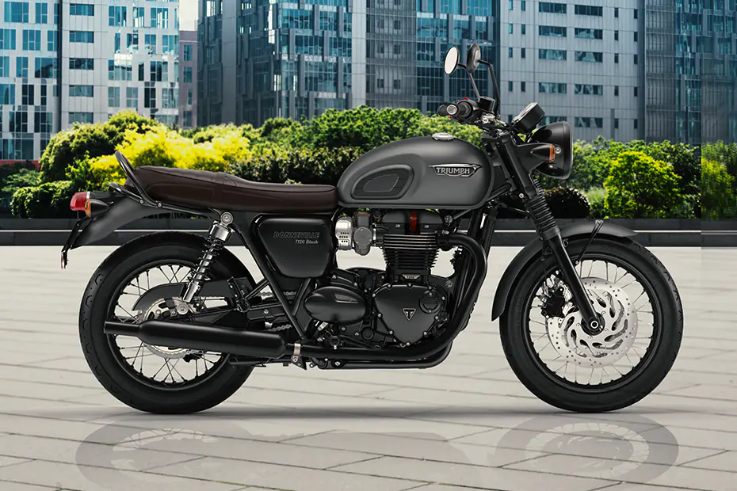
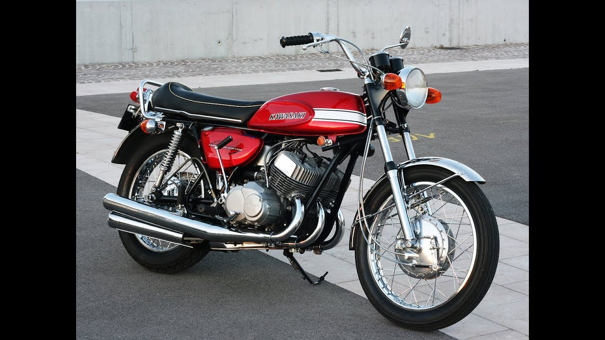
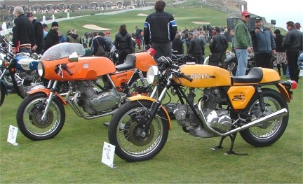
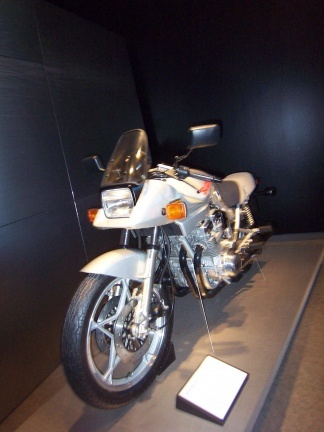
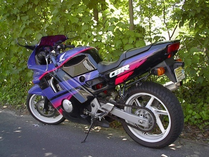
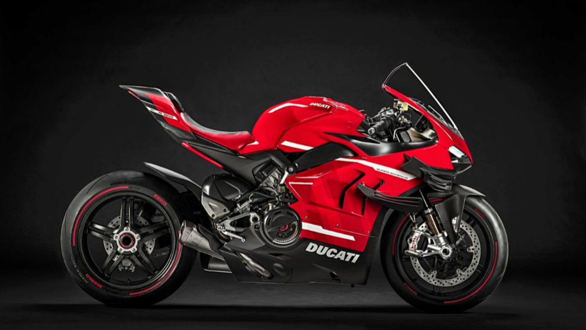
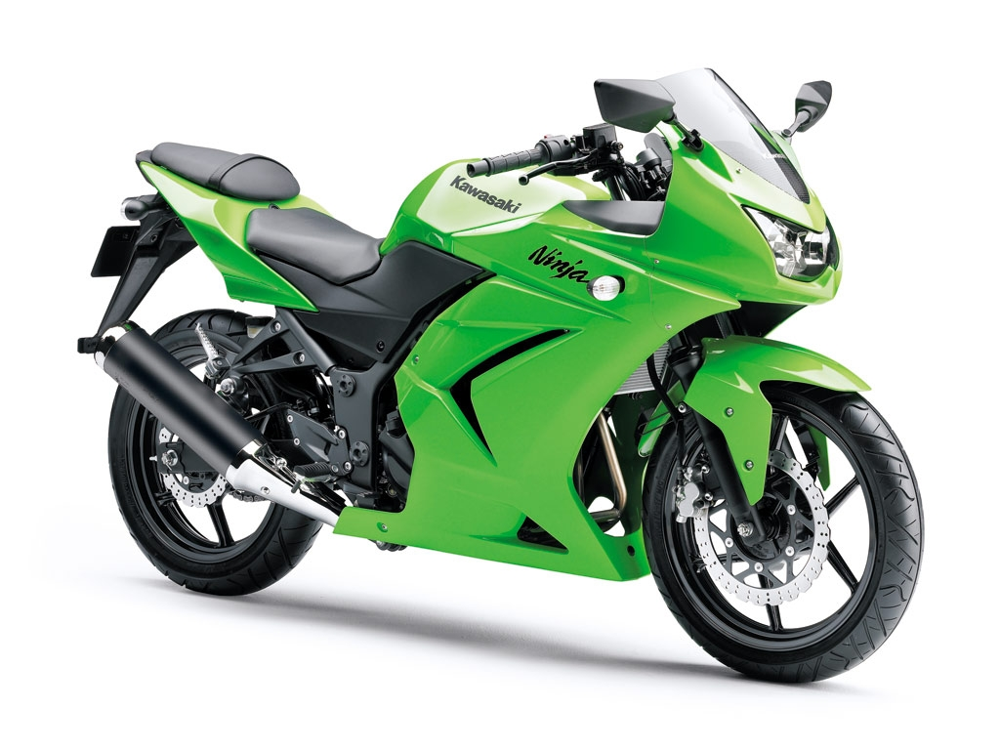

Proyecto de sitio Web 2021-10
Brayan Fernando Fonseca Ibañez
Ingenieria de Sistemas
Febrero del 2021
MOTOS DEPORTIVAS
Un poco de Historia.
Durante muchos años una moto deportiva era una moto a la que se le había eliminado los componentes innecesarios para rodar en circuito, de esta manea, las preparaciones podían ser muy peregrinas. El otro inconveniente era que las carreras se hacían por la calle, con escasas medidas de seguridad y en ocasiones consecuencias desastrosas.
La cilindrada tampoco nos permitía clasificar las motos, ya que una 1000 cc podía ser utilizada para los viajes familiares o para recorrer las precarias carreteras de la época. Además en el Campeonato del Mundo, la moto más grande que competía era una 500cc.

Una moto de 1000 cc que ya en 1954 describió lo que serían los chasis modernos, en los que unos pocos tubos se encargaban de soportar todos los esfuerzos mecánicos de la moto. Por desgracia su motor de 55 CV era demasiado para la tecnología de la época y sus 201 km/h demasiados para las carreteras de la posguerra.

Una moto derivada de la competición en el mundial de velocidad que acabó en la calle para propulsar la Alemania previa a la guerra mundial. Sus 125 cc le permitían alcanzar los 76 km/h pero lo que la hizo famosa es que tras la guerra fue la moto más copiada del mundo, ya que la produjeron BSA, Harley Davidson, la Sovietica Moska e incluso Yamaha. De esta manera una moto derivada de la alta competición no pasaba de ser una mera utilitaria.

Tuvieron que pasar unos cuantos años para que marcas como Triumph pusieran en sus motos de calle los conocimientos adquiridos con los modelos utilizados en las pruebas de Boneville que derivaron en las Triumph Bonneville T120. Esta moto estaba claramente dirigida al mercado más joven de Estados unidos, con una cilindrada de 650 cc y 46 CV podemos hablar al referirnos a ella de la primera moto deportiva de la historia. Su producción llegó hasta 1973, momento en el que en Japón las marcas ya estaban empezando a aplicar en las motos de calle los conocimientos adquiridos en el Mundial de Velocidad.

Las primeras Yamaha RD 350 y las Kawasaki Mach III utilizaban motores de dos tiempos con potencias nunca vistas antes en la calle. Estamos hablando de motores con 350 cc y 500 cc respectivamente que daban potencias de 40 CV en el caso de Yamaha (lo que significa que el motor de un litro habría dado 114 CV) mientras que la Kawasaki con rendía 60 CV (120 CV por litro) El principal problema de estas motos era su chasis, las suspensiones y los frenos, excesivamente endebles todos para estas prestaciones, lo que las convertía en motos muy complicadas de conducir. A cambio brindaban a sus conductores sensaciones muy cercanas a las que podían ver en los grandes premios de la época.

En Italia se fabricaban motos deportivas sin concesiones a la galería. Sacaron las MV Agusta 750S, las Ducati 750 SS y las Laverda SFC 750. Motos de gran cilindrada, con motores de cuatro tiempos, chasis y suspensiones casi de gran premio. La MV Agusta se vio lastrada por un halo de moto cara y complicada que no vendió más de 2000 unidades en todos los años que estuvo en producción.

En la década de los ochenta, con dos modelos japoneses que marcarán las siguientes generaciones de motos Deportivas. En 1982 se presenta la Suzuki Katana, producto de las mentes de Hans Muth y Jan Fellstrom. Famosos diseñadores de coches que recibieron el encargo de “vestir” la Suzuki GS1100E que le estaba dando muy buen resultado a la marca en el mercado. El motor de la Suzuki Katana daba 108 CV y era capaz de alcanzar los 225 km/h. Por primera vez una moto se diseñaba pensando en la estética y no en la funcionalidad de su carenado. Para acabar de rematar la categoría, en 1987 Honda presentó un mito que casi ha llegado hasta nuestros días, la Honda CBR 600 F. Una pequeña moto de solo 600 cc pero con un motor capaz de dar 85 CV y girar a 11.000 rpm. Lo más parecido a una moto de GP que podías comprar en el concesionario al lado de casa. Su carenado envolvente inspiró a la competencia. Inmediatamente Honda empezó a cosechar éxitos en el prestigioso campeonato AMA en USA. Con esta moto se sentaron las bases de lo que más adelante se conocería como Supersport.

Las motos deportivas de la ultima generacion se han sido parte de una revolucion, no solo por su cilindaje, su motor, si no por sus alcances de velocidad.
Como las siguientes:

 
GRACIAS